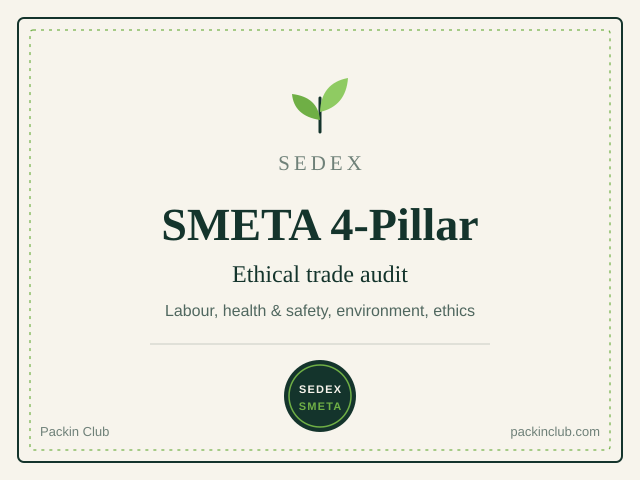

Product certification
Garbage Bags
Our compostable garbage bags are certified by DIN and carry the Seedling mark. DIN certification confirms that an independent body has assessed the product for compostability. The Seedling is the European mark for products certified compostable in industrial composting.
A certified bag lets food waste and the bag go to composting together, which suits kitchens, canteens, housing societies and municipal organics collection.
- Product
- Garbage bags and garbage bags on roll
- Certifications
- DIN, Seedling
- Composting route
- Industrial composting
Industrial composting facilities may not be available in every area. Check locally for availability.
Social & Ethical Compliance
An audit of how we treat people and run our operations.

SEDEX: SMETA 4-Pillar Certification
SMETA (Sedex Members Ethical Trade Audit) is one of the most widely used ethical audit methods in global supply chains. The 4-pillar audit covers labour standards, health and safety, environment and business ethics.
Many international brands ask suppliers for a SMETA audit before they place an order. It shows that our products are made responsibly as well as sustainably.